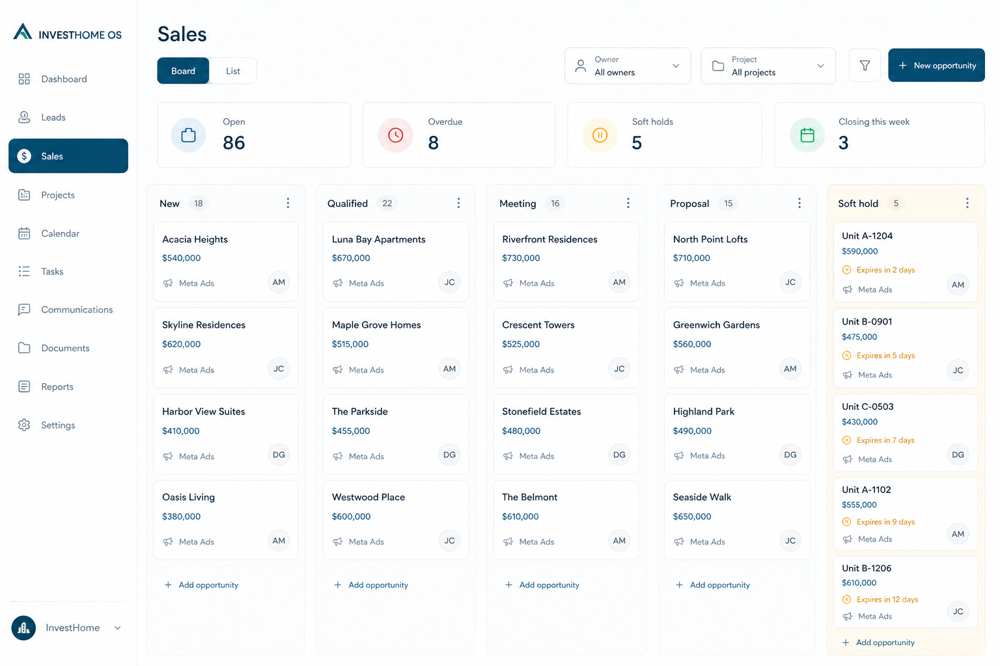

Kanban-first pipeline with matching drawer — stages from New through Won/Lost, soft-hold urgency visible on cards.
Operational kanban first. List, attribution payloads, and finance settlement stay progressive — backend capable, UI calm.
Board columns are the product. Card click opens a drawer; Match inventory is a visual panel, not a spreadsheet detour.
Spacious kanban with KPI strip and soft-hold emphasis — CRM that feels commercial, not enterprise-dense.

Primary mobile job: finish today’s queue — not recreate the desktop dashboard.
Matching can start from board drawer, inventory card, or customer Matches tab — same panel contract.
| Action | Where | Outcome |
|---|---|---|
| Drag / Change stage | Card or drawer | Moves opportunity; gated stages confirm |
| Match inventory | Drawer / card | Visual unit mini-cards + Hold |
| Open customer | Drawer | Unified profile |
| Set follow-up | Drawer | Updates urgency on card |
| Mark Lost / Won | Stage change | Reason or closing checklist |
Current sales surfaces bury matching and stage discipline. Kanban-first with a shared match panel makes soft holds and unit linkage obvious.
Visual package only. No routes, components, or APIs changed. Approve or request changes before any implementation.